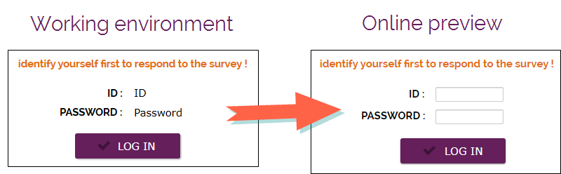
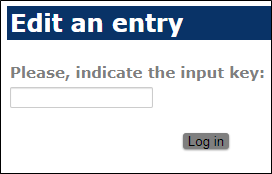

RESPONDENT IDENTIFICATION
The Respondent Identification option allows you to set up the identifiers of respondents authorized to connect to the online survey. It is also from this screen that it is possible to set up a personalized form to be used to identify oneself or in case of possible modifications of the answers by the respondent.

The option No identifier is checked by default. To put in place a respondent identification you can use the following types of identifiers:
This option allows you to manually create input identifiers or directly import a file .txt or .dic.
The Data entry identifiers must contain as follows:
Identifier=V1=V2=V3=…
identifier1=Modality1=Modality2=Modality2=…
identifier2=Modality2=Modality2=Modality1=…
-
The variable entered in the 1st column will be considered as an identification variable.
-
The first line must always contain the names of variables.
EXAMPLE:
CustomerCode=Name=City=Age
1eb31=Bruno=Annecy=25
3cr57=Jean=Grenoble=45
etc....
This option allows you to use an external directory for access the survey, just insert the URL of the script to access the directory in the field provided for this purpose. The responders will have to enter a username and password to access the survey.
NOTE: (In the case of an external directory) If you are going to set up a custom form for the entry of the identifier, first check the box provided for this purpose and then add the elements listed below on the form indicated: 
-A text box containing the keyword "ID"
- A text box containing the keyword "Password"
- A save button

f you already have a panel on your SphinxOnline account, you can directly link it to your new survey. In this way the panelists will be able to access it by entering their identifier. To do this, you have to indicate the following:
-
Account name.
-
Survey name (profile survey).
NOTE: The survey where you are going to apply the identification of respondent have to be on the same server as the profile survey (panel).
Set up a customized form for the identifier entry and for the entry modification
Enter the identifier : (identifier type : File / Panel)
By default, the page for entering the identifier is as follows:

To set up a custom form for entering the ID, do the following:
-
NOTE: A text box containing only the keyword "Identifier" as well as a Save button (that you can rename) must be present in the form indicated.
-
Check the Use a form for entering the identifier option from the Respondent Identification tab.
-
Select the form to use.
NOTE: The shortcut must always point to the main questionnaire form, that is, the one containing the questions. The identification form will automatically be displayed before the questionnaire when the respondent accesses the link.

Modification of the entry:
By default, the page for editing the entry is as follows:

To set up a custom form to edit the entry, do the following:
-
NOTE: A text box containing only the keyword "Password" and a save button must be present in the specified form.
-
Check the option Use a form for modification (key request).
-
Select the form to use.